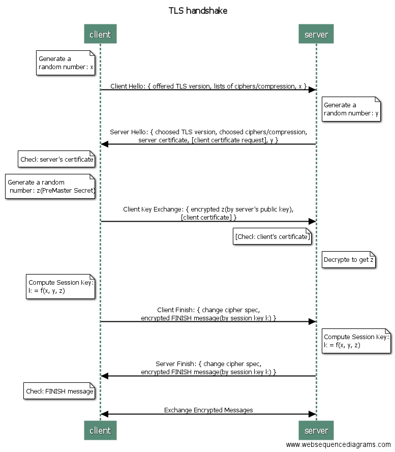
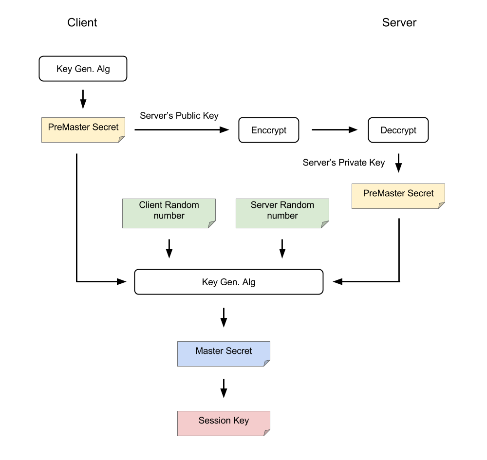

Handshake

Diagram is generated by WebSequenceDiagrams.com
Client Hello
The client and the server support several versions of TLS. To make sure they have a matched version to communicate, the client first will send its list of supported TLS versions.
In the same manner, the client and the server support many ciphers and compression and etc., some might be same, some might be different. To make sure they can use the same methods on both side, the client need to send its lists of supported ciphers/compression/etc. to the server.
In addition, the client will generate a random number x. It will be further used to generate the session key.
In summary, the client will send
- supported TLS versions
- supported ciphers
- supported compression
- supported ...
- a random number x
Server Hello(with Server Done)
After receiving the Client Hello, server will reply messages from Server Hello to Server Done. Some might sends each message respectively, while the other might send just one message including Server Hello and Server Done. The Server Hello and Server Done packet contains only head without content.
The server will search its TLS versions, ciphers, comparison, etc. and choose the protocols matched with the client. If there is no matched protocols of them, then the communication will be dropped. Otherwise, the server will reply the matched protocols to the client. The replied messages also include server's certificate, which is a proof for server's identification. The certificate is given by a Certificate Authority. It will provide certificates to applied parties if they pass strict examines.
The server side will also pick a random number y as an input for generating the session key.
The server can decide whether or not it needs the client's certificate to prove the identification. Some applications with higher security requirements may need to ask.
In summary, the server will reply
- chosen TLS version
- chosen ciphers
- chosen compression
- chosen ...
- server's certificate
- a random number y
- [ask for client's certificate]
Client Key Exchange
The client needs to verify the server's certificate to check its identification. If the certificate is invalid, then the client will show a alert and let user decides whether the communication should be continued.
Next, the client will generate the third random number z in this communication. Similarly, the z is also used to produce the final session key. In this time, the z is encrypted by the server's public key before sending out. The server's public key can be obtained from the server's certificate.
If the server asks the client's certificate, then the client needs to add its certificate into the replied message.
In summary, the client will reply
- encrypted random number z
- [client's certificate]
Client Finish
From the server's reply, the client can know which TLS version, ciphers, and other matched methods they will use. Thus, the client will add a Change Cipher Spec message to notify the server that the following communication will use the chosen cipher to encrypt/decrypt the raw data based on their matched TLS version.
After adding Change Cipher Spec message, the client will encrypt a FINISH message by the session key and send it to the server. The session key is produced by the random numbers x, y, z.
In summary, the client will send
- Change Cipher Spec message
- FINISH
Server Finish
On server side, if it requires the client's certificate, it will verify it upon receiving it.
The same session key can also be derived from the random numbers x, y, z, where the z can be obtained by decrypting the client's Client Key Exchange messages by its private key.
After computing the session key, the server will also use a Change Cipher Spec message to notify the client that the following messages will be encrypted. By the same token, the message will be sent with an encrypted FINISH message by using the derived session key.
In summary, the server will send
- Change Cipher Spec message
- FINISH
Authentication
If the both sides can decrypt the FINISH message based on the previous handshake messages, then it means that the valid channel is established successfully. They can use the session key in the following communication.
Secret Keys

Why does TLS need to generate a session key? Can it use the public key directly?
The symmetric encryption is faster than the asymmetric one. TLS protocol allows the engaging parties to negotiate a symmetric key to boost the encryption instead of directly using asymmetric public-private key pair.